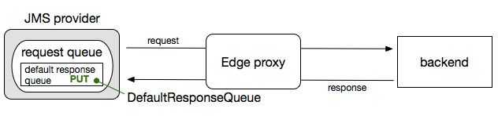
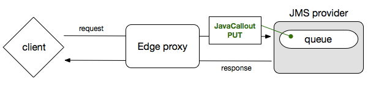

[toc]
This topic pertains to Apigee Edge for Private Cloud only, on versions prior to 4.16.01. It is not supported on Private Cloud version 4.16.01 with the introduction of the Nginx server that replaced the Netty router. JMS support on Private Cloud releases after 4.16.01 is pending.
If you use Java Message Service (JMS) with Java Naming and Directory Interface (JNDI), you can make RESTful calls from JMS to backend services through Apigee Edge. JMS support is available only in Edge for Private Cloud (on-premises) for inbound/northbound requests to an API proxy. For example, you might need an API proxy endpoint to handle incoming JMS messages from multiple JMS queues, apply logic to convert JMS messages to HTTP, forward the request to a target endpoint, and return the response as JMS, where Edge can send it to the default response queue.
The following diagram illustrates the use case.

This document describes how to configure Edge to work with a JMS host and how to create an API proxy that handles incoming JMS messages.
Regardless of the JMS provider you use—for example, whether you’re using Apache ActiveMQ or JBoss HornetQ (or neither)—the Edge supports only Java Naming and Directory Interface (JNDI) to connect to the JMS provider. If a JMS provider doesn’t support JNDI, it can't be used with Edge.
Apigee's default JMS integration supports receiving messages from a JMS queue (northbound) and optionally putting the response in the default response queue. If you want to do PUT operations to a JMS queue (southbound), use a Java Callout policy, as illustrated by the following diagram.

In Edge, the router behaves like a consumer of JMS messages and can subscribe to a queue for a JMS provider like ActiveMQ. This section describes how to add the required JMS libraries to your Edge router so that it can communicate with a JMS provider.
cd /opt/apiged4/share/lib/thirdparty.sudo wget http://repo1.maven.org/maven2/org/apache/activemq/activemq-client/5.8.0/activemq-client-5.8.0.jar sudo wget http://repo1.maven.org/maven2/org/apache/geronimo/specs/geronimo-j2ee-management_1.1_spec/1.0.1/geronimo-j2ee-management_1.1_spec-1.0.1.jar sudo wget http://repo1.maven.org/maven2/org/apache/geronimo/specs/geronimo-jms_1.1_spec/1.1.1/geronimo-jms_1.1_spec-1.1.1.jar sudo wget http://repo1.maven.org/maven2/org/fusesource/hawtbuf/hawtbuf/1.2/hawtbuf-1.2.jar
sudo chown apigee geronimo-jms_1.1_spec-1.1.1.jar sudo chown apigee geronimo-j2ee-management_1.1_spec-1.0.1.jar sudo chown apigee hawtbuf-1.2.jar sudo chown apigee activemq-client-5.8.0.jar sudo chmod +x geronimo-jms_1.1_spec-1.1.1.jar sudo chmod +x geronimo-j2ee-management_1.1_spec-1.0.1.jar sudo chmod +x hawtbuf-1.2.jar sudo chmod +x activemq-client-5.8.0.jar
In the next section, you'll create a JMS host entity in Edge that connects Edge to your JMS provider.
To use JMS with Edge, you configure the JMS connection details by creating a JMS host. The JMS host then can be referenced from JMS API proxy endpoints by using the <JMSHost> or <JmsResponseHost> tags. All JMS API proxies share the same JMS host.
Create a JMS host with the following API call to your Edge for Private Cloud management environment:
curl –H “Content-Type: application/xml” –u: –X POST “http://{host} :8080/v1/organizations/{org_name}/ environments/{env_name}/ jmshosts" –d “<JMSHost name="jmshost1"><Description></Description><ConnectionFactoryClass>org.apache.activemq.jndi.ActiveMQInitialContextFactory</ConnectionFactoryClass><ConnectionFactory>FooFactory</ConnectionFactory><ConnectionURL>tcp://172.16.1.94:61616</ConnectionURL><Context>JmsContext</Context><ContextUsername>abc</ContextUsername><ContextPassword>password</ContextPassword><ConnectionUsername>admin</ConnectionUsername><ConnectionPassword>password</ConnectionPassword><Connections>5</Connections></JMSHost>”
| Name | Description |
|---|---|
| name | Name of the JMS host. |
| Description | Description of the JMS host. |
| ConnectionFactoryClass | Provider specific implementation of JMS Connection factory class. |
| ConnectionFactory | Property used to select the registry service provider as the initial context and specifies the class name of the initial context factory for the provider. Note that it is not used by the provider. |
| ConnectionURL | URL of the JNDI provider. |
| Context | Initial JNDI context and values are specific to JMS provider. |
| ContextUsername | User name to access the JNDI context. |
| ContextPassword | Password to access the JNDI context. |
| ConnectionUsername | User name to access the JMS provider. |
| ConnectionPassword | Password to access the JMS provider. |
| Connections | Number of physical TCP connections to JMS provider. The maximum is 5. |
You might need to remove a JMS host associated with an environment. To do this, execute the following API call:
curl –u: “http://{host} :8080/v1/organizations/ environments/ jmshosts/{jmshost_name}” -X DELETE
The ProxyEndpoint and JmsProxyConnection elements define a set of JMS transport properties. These properties can be used to set network configurations to connect to the JMS provider.
The Edge JMS API proxy endpoint supports only receiving messages from a JMS queue. Other JMS operations are not supported.
Properties are set on a JMS API proxy as follows:
<ProxyEndpoint name=”default” proxyType="jmsConnection"> <!-- "proxyType” is mandatory if you want to create JMS endpoints --> <PreFlow name="PreFlow"> <Request/> <Response/> </PreFlow> <PostFlow name="PostFlow"> <Request/> <Response/> </PostFlow> <Flows/> <JmsProxyConnection state=”on”> <JmsHost>jmshost1</JmsHost> <!-- this is the JMS host created in prev section --> <Destination type="queue">dynamicQueues/sourceAppsDataQ</Destination> <MessageSelector></MessageSelector> <DefaultResponseQueue>dynamicQueues/defaultResponseQueue</DefaultResponseQueue> <JmsResponseHost>defaultResponseHost</JmsResponseHost> </JmsProxyConnection> <RouteRule name="noroute"/> </ProxyEndpoint>
Ensure that you define the attribute proxyType="jmsConnection" in order to create JMS proxy endpoints.
Also, ensure that you have the JMS provider-specific client library in the classpath.
The following table provides the description of all JmsProxyConnection properties that are available for JMS implementation.
| Property name | Description | Required? |
|---|---|---|
| JmsProxyConnection |
JMS network details associated with the API proxy. You can dynamically set to subscribe/unsubscribe to a given queue by defining an attribute state=”on/off”. By default it is “on”. The element replaces the HTTPProxyConnection used by non-JMS API proxies. |
Yes |
| JmsHost | JMS host defined for the JMS proxy. | Yes |
| Destination | Queue path to which the subscribe listens to the messages. | Yes |
| MessageSelector | Selector pattern on queues based on JMS headers. | No |
| DefaultResponseQueue | Name of the JMS queue where response from target should be published. | No |
| JmsResponseHost | JMS response host defined for the JMS proxy. If specified, all responses are sent to the queues over this host. | No |
All HTTP headers matching standard JMS headers will be set “as is” and other HTTP headers will be set as JMS properties in the response message used by the JMS proxy.
You can use the AssignMessage policy to specify the following headers in a JMS proxy.
X-Apigee-Ignore-JMSResponse - By default, the API proxy puts the response on the JMS response queue specified in the JMSReplyTo header. However, if you want the backend service to handle putting the response on the queue specified in JMSReplyTo—or something else outside of the API proxy such as a Java callout or another API proxy—add the X-Apigee-Ignore-JMSResponse header and set it to true:<Header name="X-Apigee-Ignore-JMSResponse">true</Header>For messages placed in the ResponseQueue:
JMSExpiration - Time in milliseconds after which the message expires.JMSDeliveryMode - A value of 1 (non-persistent) or 2 (persistent).You can also find a JMS discussion thread on the Apigee Community: https://community.apigee.com/questions/22294/activemq-jms-integration-to-apigee.html.